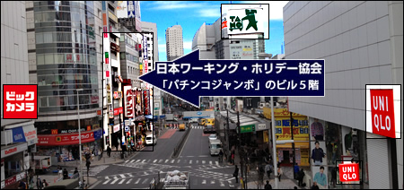
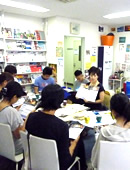

';
$header_obj->fncMenuHead_h1text = '日本ワーキング・ホリデー協会東京オフィス新宿本店へは新宿駅から徒歩１分！初心者セミナーでは最新情報と正しい知識をみにつけることができます。';
$header_obj->display_header();
include('../../calendar_module/mod_event_horizontal.php');
?>
';
$header_obj->fncMenuHead_h1text = '日本ワーキング・ホリデー協会東京オフィス新宿本店へは新宿駅から徒歩１分！初心者セミナーでは最新情報と正しい知識をみにつけることができます。';
$header_obj->display_header();
include('../../calendar_module/mod_event_horizontal.php');
?>
アクセス

東京オフィス 新宿本店
| 住所 | 東京セミナー会場：東京オフィス新宿本店にて催行されます。 〒160-0023 東京都新宿区西新宿1-3-3 品川ステーションビル新宿5階507 |
|---|---|
| 新宿オフィス周辺地図 |
mobilepage) { ?>
大きな地図で見る 大きな地図で見る |
| アクセス方法 | 【JR新宿駅西口B16から徒歩1分！】 JR新宿西口のB16出口/大江戸線新宿西口駅を出てまっすぐ行くと「パチンコジャンボ新宿」がございます。ワーキングホリデー（ワーホリ）協会新宿オフィスは同ビル5階です。 道を渡った斜め向かいには「ユニクロ新宿西口店」があります。初めてのご来店で道に迷った時は新宿に到着後、駅員さんに「ユニクロ新宿西口店」 までの行き方をきいて、そこから斜め向かいの「パチンコジャンボ新宿」を見つけると簡単です。 より詳細なアクセス方法はこちらを参照下さい。  【初めて新宿にお越しの方へ】 新宿は、新宿駅西口、新宿駅東口、新宿駅南口と出口が大きく分かれています。新宿駅西口が最寄りですが、その他の出口にバスや電車が到着した場合、 西口へはあるいて移動することが可能です。その際の注意点として、新宿駅内を通過することはできません。（改札口を通り抜ける際に切符を買う必要があるため） 一度駅の外に出て、新宿駅周辺を回る形で西口まで移動してください。 西口に到着後は「ユニクロ新宿西口店」→斜め向かいの「パチンコジャンボ新宿」→同ビル5階→ワーキングホリデー協会新宿本店へご来店ください。 mobilepage) { ?> 大きな地図で見る 大きな地図で見る |
| 連絡先 | お問い合わせ 無料セミナーのご予約はこちらから |
| 営業時間 | OPEN 11:00 - CLOSE 19:00 新宿のオフィスは土日、祝日も営業いたします！ ※ご注意 個別でのカウンセリングをご希望の場合は、事前にご予約をお願い致します。 |
| スケジュール | 新宿本店では、毎日様々な初心者向けワーキングホリデー（ワーホリ）セミナーを開催しております。 新宿本店は、東京にお住まいのお客様はもちろん、千葉県、埼玉県、横浜、栃木県、群馬県にお住まいのお客様にも気軽に参加 していただけるよう時間帯や日程を考慮し、回数を増やして開催しております。 |
| カウンセラー紹介 |
|
| オフィスの様子 |   |
| 新宿本店の雰囲気 | 新宿本店は白色で統一され今まで以上に開放感溢れる、新宿とは思えないくらいリラックスできる空間になりました。
オフィス内には放送スタジオを設け最新ワーキングホリデー（ワーホリ）セミナー情報を各地へ配信しております。
新宿にオフィスを設けることで、ショッピングや学校の授業前、仕事帰りにご来店いただく方やお友達との待ち合わせ場所としてご利用いただくお客様も
目立つようになりました。 新宿は各地からの交通の便もよく、長距離バスでご来店いただき→ワーキングホリデー（ワーホリ）セミナー参加→そのまま日帰りされる方や1泊して東京を観光して帰られる方も 多いです。新宿でワーキングホリデー（ワーホリ）セミナーが受けられる便利さを実感していただけます。 新宿オフィスは、これから海外へご出発される方と海外からお戻りになられた方々で毎日活気にあふれております！  |
| 新宿本店から | 【インターン生「由紀ちゃん」からメッセージ】 新宿のオフィスにはほんとうにいろいろな方がご来店されます。わたしは以前シドニーでのワーキングホリデー（ワーホリ）生活経験があるのですが、 はじめは緊張しておろおろしているだけで、皆様の質問にしっかりと答えることができませんでした。 新宿スタッフの皆様にご迷惑をおかけしながら今では、ワーキングホリデー（ワーホリ）出発前準備セミナーを任されています！ 新宿にオフィスがあるという便利さと女性スタッフも多いので女の子一人でも安心して参加できますよ！ 新宿にお越しの際には是非ご来店ください。土日、祝日も営業してます！ご来店時には私から声をかけますので、びっくりしないでくださいね。 |